Elige el estilo de tu página.
Sesenta y dos estilos de diseño, cada uno con un negocio de ejemplo. Ábrelos, pruébalos en tu celular y quédate con el que va con tu marca. Tu página final se hace a la medida, con tus colores, fotos y textos.
-

 Oscuro y tecnológico
Oscuro y tecnológicoPrecisión nocturna
Negro profundo, un solo color de acción y bordes finos. Para software, startups y servicios digitales.
Ejemplo: Kardo, software de inventario -

 Oscuro y tecnológico
Oscuro y tecnológicoNeón coral
Fondo casi negro, destellos de color en la portada y tarjetas que parecen teclas. Para academias, tecnología y gaming.
Ejemplo: Código Norte, academia de programación -

 Oscuro y tecnológico
Oscuro y tecnológicoBioluminiscente
Caja negra redondeada, titulares enormes y un verde lima que brilla en los botones. Para laboratorios, salud y ciencia.
Ejemplo: VitroLab, laboratorio clínico -

 Oscuro y tecnológico
Oscuro y tecnológicoBanca alpina
Foto de paisaje a pantalla completa, fondo grafito y un azul cobalto para la acción principal. Para finanzas, seguros y consultoras.
Ejemplo: Cumbre, cuenta para empresas -

 Oscuro y tecnológico
Oscuro y tecnológicoAbismo turquesa
Verde azulado profundo, una esfera de partículas en movimiento y botones con degradado. Para energía, datos e inversión.
Ejemplo: Marea, energía solar -
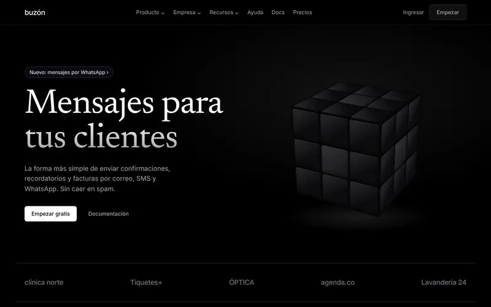
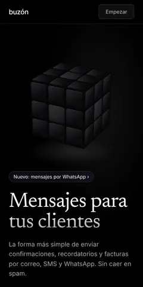
Oscuro y tecnológicoTerciopelo
Negro total, titulares con serifa, un cubo 3D girando y bloques de código. Para software, tecnología y servicios para desarrolladores.
Ejemplo: Buzón, mensajes para negocios -
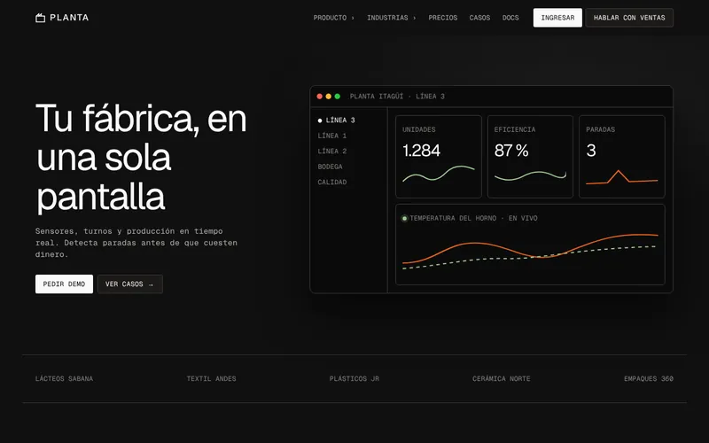
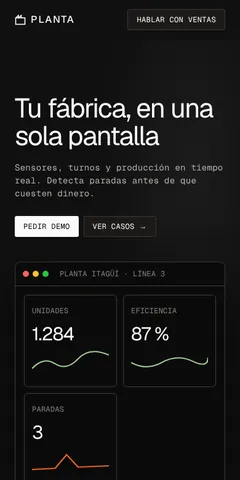
Oscuro y tecnológicoSala de control
Fondo carbón, letra técnica y un tablero en vivo con métricas y alertas. Para industria, logística y monitoreo.
Ejemplo: Planta, monitoreo de fábricas -
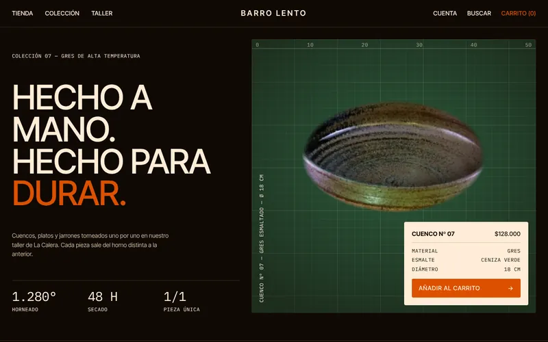
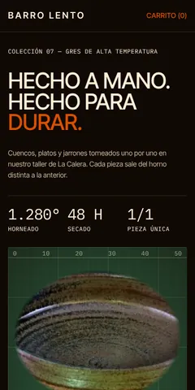
Oscuro y tecnológicoCuarto oscuro
Nogal casi negro, letra crema en mayúsculas, un tapete de corte verde y una ficha de producto encima. Para talleres, productos hechos a mano y marcas de autor.
Ejemplo: Barro Lento, taller de cerámica -
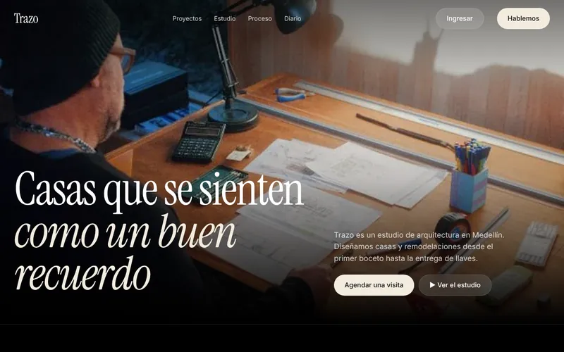
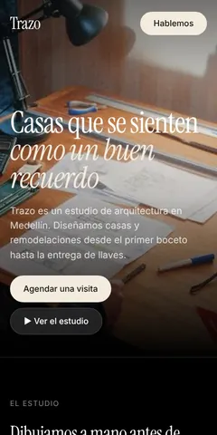
Oscuro y tecnológicoFunción privada
Foto de cine a pantalla completa, serifa elegante en cursiva y botones crema. Para estudios de arquitectura, fotógrafos y marcas premium.
Ejemplo: Trazo, estudio de arquitectura -
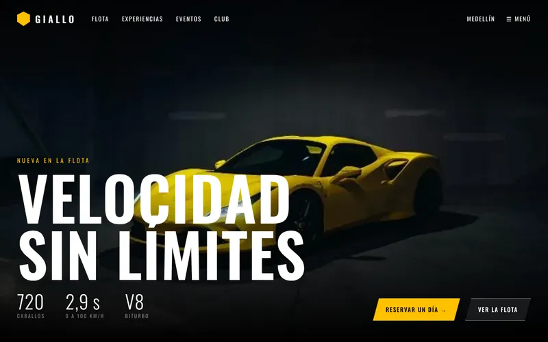
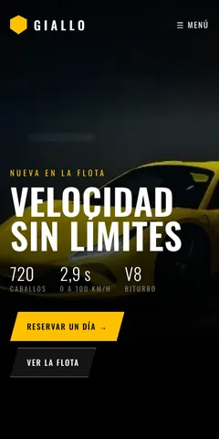
Oscuro y tecnológicoShowroom negro
Negro absoluto, amarillo intenso, letras condensadas en mayúsculas y botones cortados en diagonal. Para concesionarios, motos, autos y deportes.
Ejemplo: Giallo, autos deportivos -
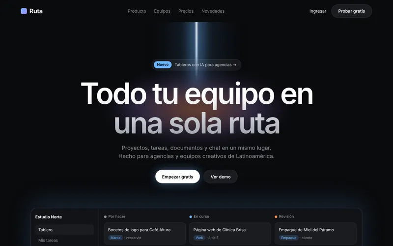
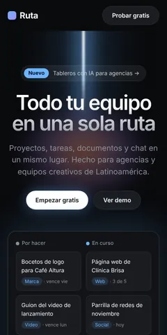
Oscuro y tecnológicoAurora
Casi negro con un haz de luz, titular brillante y una vista de la aplicación debajo. Para software, apps y productos digitales.
Ejemplo: Ruta, gestión de proyectos -
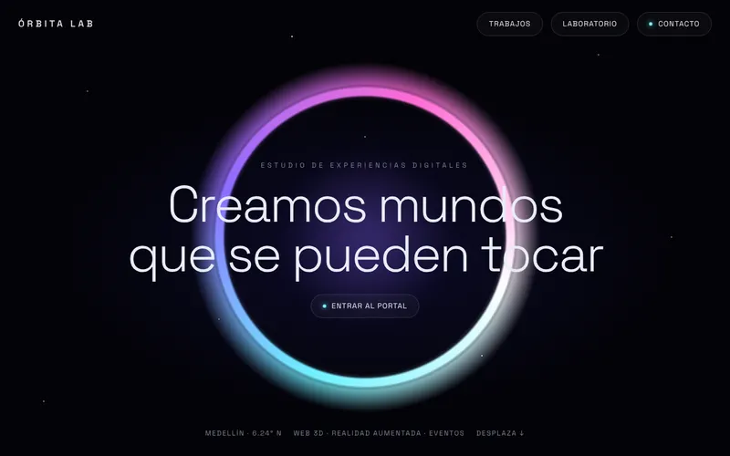
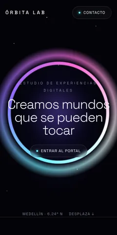
Oscuro y tecnológicoPortal cósmico
Espacio profundo, un anillo de luz de colores y botones fantasma. Para estudios creativos, eventos y experiencias digitales.
Ejemplo: Órbita Lab, experiencias 3D -
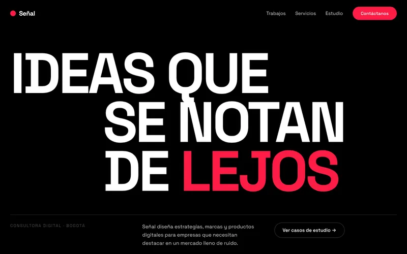
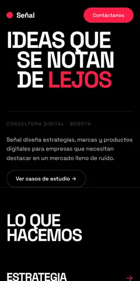
Oscuro y tecnológicoMonumento carmesí
Negro absoluto, titulares blancos monumentales en mayúsculas y un solo botón rojo. Para consultoras, agencias y marcas que quieren imponer.
Ejemplo: Señal, consultora digital -
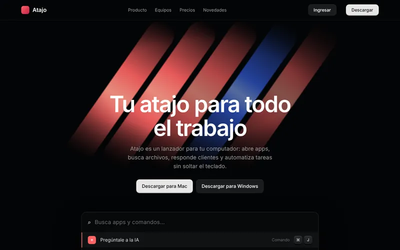
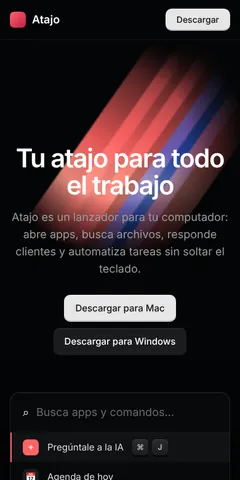
Oscuro y tecnológicoCoral nocturno
Casi negro, rayos de luz coral y azul, una ventana de comandos y teclas en relieve. Para software, apps y herramientas de productividad.
Ejemplo: Atajo, lanzador de apps -
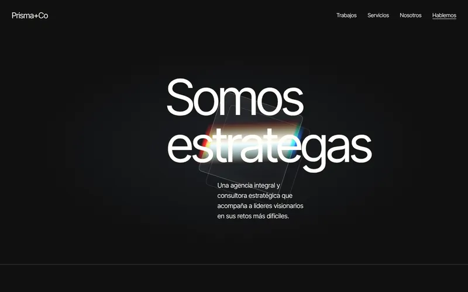
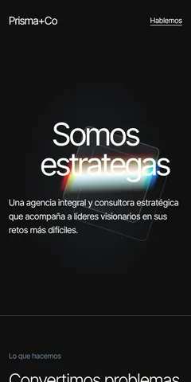
Oscuro y tecnológicoPrisma
Obsidiana, letra fina gigante y un cubo de vidrio que separa la luz en colores. Para agencias, estudios y consultoras premium.
Ejemplo: Prisma+Co, agencia estratégica -
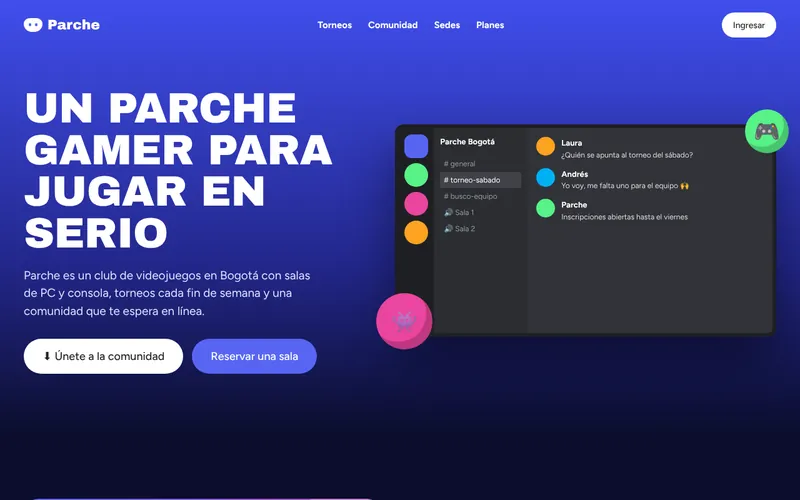
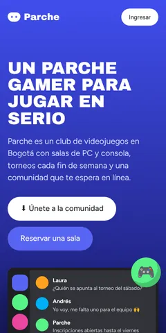
Oscuro y tecnológicoMundo juego
Azul profundo con estrellas, titulares gruesos en mayúsculas y un chat de comunidad. Para gamers, esports, clubes y comunidades.
Ejemplo: Parche, club de videojuegos -

 Minimalista
MinimalistaSala blanca
Mucho espacio en blanco, botones redondos azules y el producto como protagonista. Para salud, belleza y marcas premium.
Ejemplo: Sonrisa Clara, clínica dental -

 Minimalista
MinimalistaGalería cálida
Fondo blanco, fotos grandes y un buscador al centro. Para hospedajes, inmobiliarias y catálogos.
Ejemplo: El Roble, cabañas y glamping -

 Minimalista
MinimalistaCatálogo industrial
Letras ultrafinas, cero esquinas redondeadas y fotos de producto en rejilla. Para tiendas de diseño, tecnología y objetos.
Ejemplo: Tono, equipos de audio -

 Minimalista
MinimalistaMonocromo
Blanco y negro puro, letra técnica y una esfera flotando en la portada. Para agencias digitales, desarrollo y SaaS.
Ejemplo: Nodo, estudio de desarrollo -

 Minimalista
MinimalistaLienzo blanco
Un collage de trabajos a todo color con una tarjeta blanca encima. Para escuelas, estudios creativos y portafolios.
Ejemplo: Trazo, escuela de diseño -
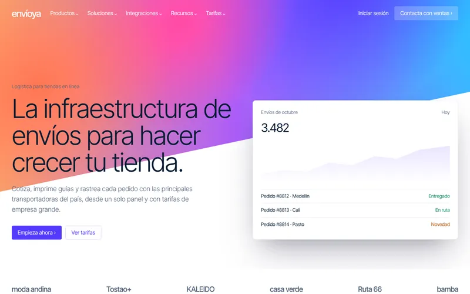
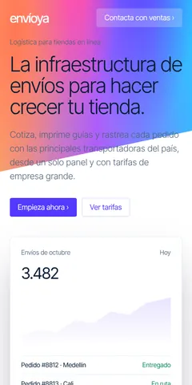
MinimalistaTinta índigo
Blanco limpio, una franja de degradado de colores y un solo índigo para los botones. Para plataformas, pagos y empresas B2B.
Ejemplo: EnvíoYa, logística para tiendas -
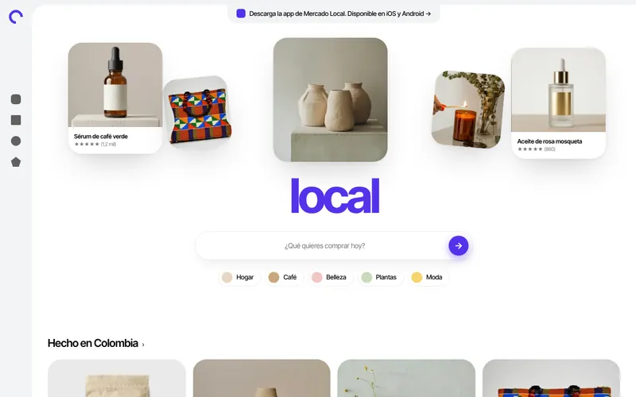
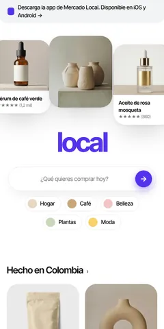
MinimalistaVitrina flotante
Productos flotando en tarjetas muy redondeadas, buscador al centro y un violeta de marca. Para tiendas en línea y marketplaces.
Ejemplo: Mercado Local, productos colombianos -
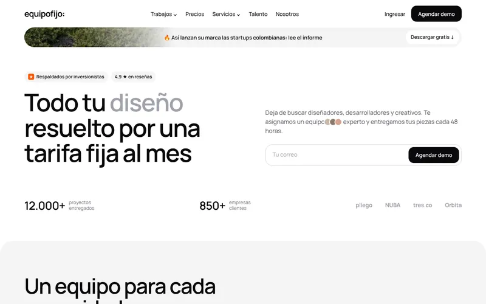
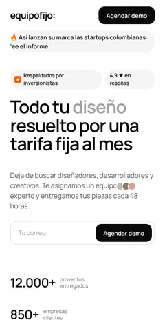
MinimalistaZinc
Escala de grises, esquinas muy redondeadas, una franja de foto natural y botones negros. Para agencias, suscripciones y servicios.
Ejemplo: Equipo Fijo, diseño por suscripción -
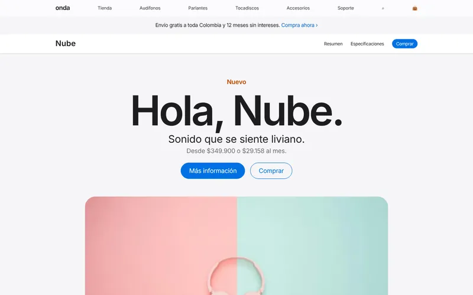
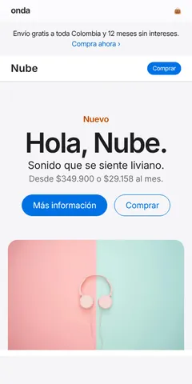
MinimalistaCatedral blanca
Gris perla, titulares enormes centrados, botones en píldora azul y el producto como protagonista. Para tiendas de tecnología y lanzamientos.
Ejemplo: Onda, tienda de audio -
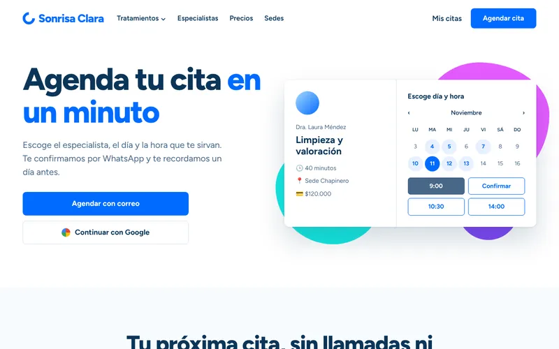
MinimalistaAgenda marina
Blanco, azul marino y un calendario de citas con manchas de color detrás. Para consultorios, clínicas y servicios con reserva.
Ejemplo: Sonrisa Clara, odontología -
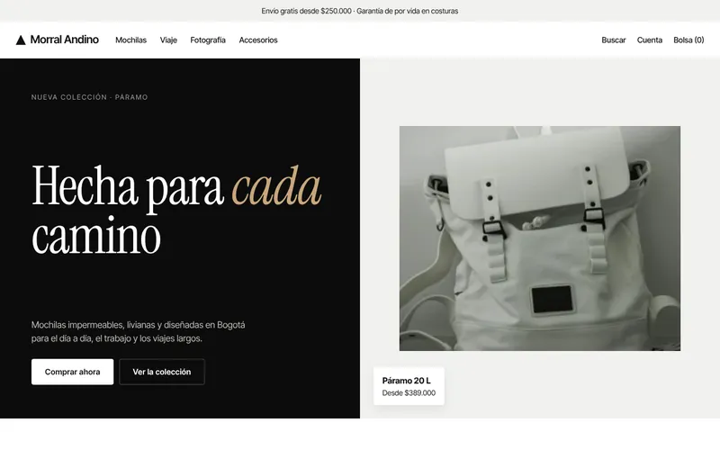
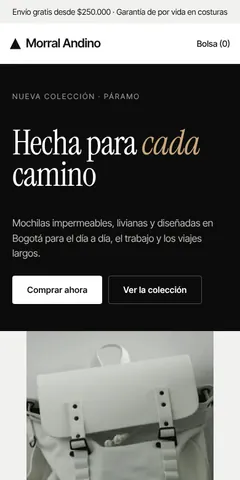
MinimalistaGalería media luz
Panel negro con serifa en cursiva al lado de una vitrina gris y tarjetas de producto limpias. Para tiendas de bolsos, ropa y accesorios.
Ejemplo: Morral Andino, mochilas -
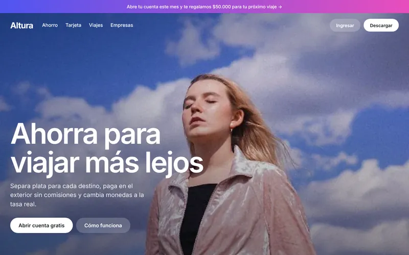
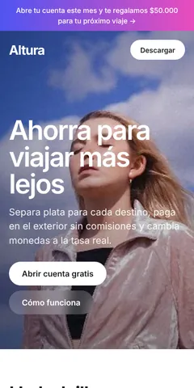
MinimalistaCielo abierto
Foto de cielo a pantalla completa, letra blanca grande y tarjetas con el celular. Para apps, bancos digitales y viajes.
Ejemplo: Altura, ahorro para viajes -
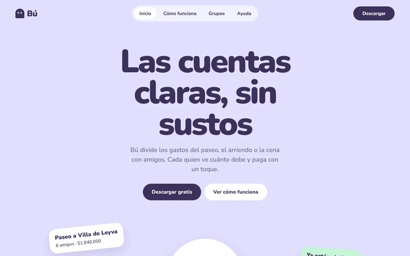
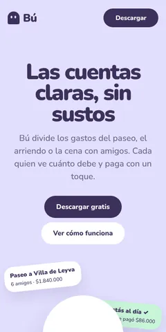
MinimalistaLavanda
Lavanda suave, berenjena, una mascota amigable y tarjetas pastel. Para apps, servicios digitales y marcas cercanas.
Ejemplo: Bú, gastos compartidos -
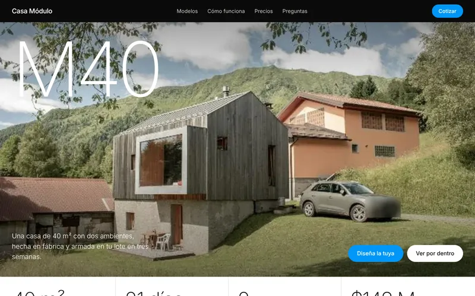
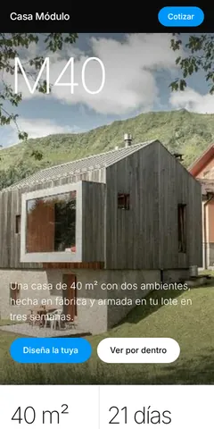
MinimalistaPlano cálido
Foto de casa a pantalla completa, números finos gigantes y un plano dibujado. Para constructoras, inmobiliarias y arquitectura.
Ejemplo: Casa Módulo, casas prefabricadas -

 Llamativo
LlamativoRecreo
Letras redondas, verde brillante, botones gruesos y una mascota. Para colegios, niños y marcas juveniles.
Ejemplo: Pequeños Genios, tutorías para niños -

 Llamativo
LlamativoPicante
Letras gigantes tipo cartel, colores cálidos y una cinta que se mueve. Para restaurantes, comida rápida y eventos.
Ejemplo: Brasa Burger, hamburguesería -

 Llamativo
LlamativoCuaderno
Personajes dibujados, tarjetas de colores como notas adhesivas y un azul de acción. Para coworkings, comunidades y equipos.
Ejemplo: Colmena, coworking -

 Llamativo
LlamativoBrutal
Titulares gigantes en mayúscula, bloques de concreto en 3D y un amarillo eléctrico. Para arquitectura, construcción y marcas atrevidas.
Ejemplo: Bloque, estudio de arquitectura -

 Llamativo
LlamativoResaltador
Blanco y negro con un amarillo resaltador solo donde importa, y el producto en pantalla. Para contabilidad, finanzas y software.
Ejemplo: Cuenta Clara, contabilidad para pymes -
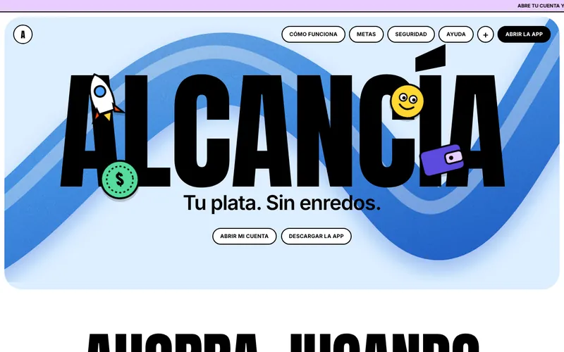
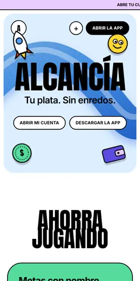
LlamativoInflable
Letras gigantes, una cinta azul inflada en 3D y stickers de colores. Para apps juveniles, fintech y marcas divertidas.
Ejemplo: Alcancía, app de ahorro -
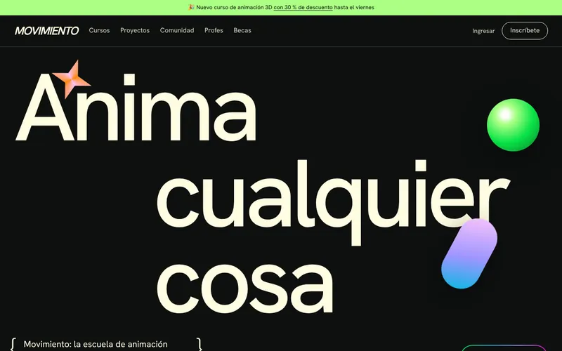
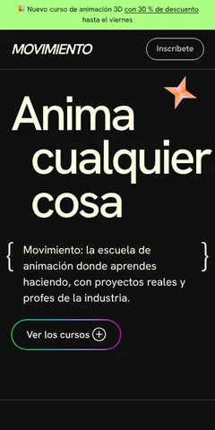
LlamativoPizarra animada
Fondo negro, letras crema enormes, formas 3D de colores y cada categoría con su color. Para escuelas creativas, estudios y eventos.
Ejemplo: Movimiento, escuela de animación -
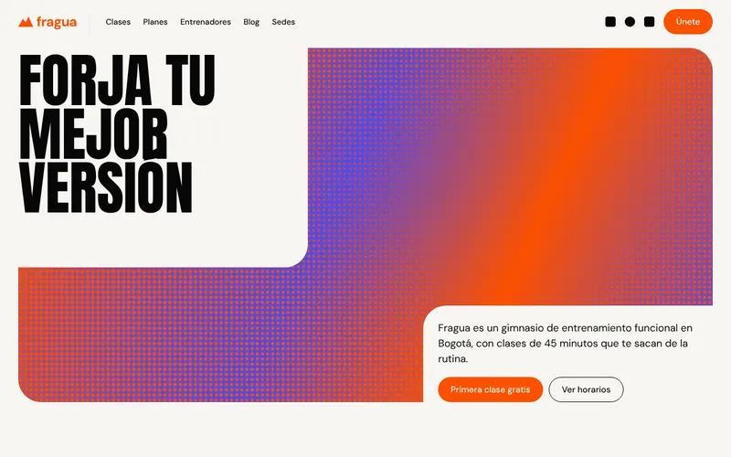
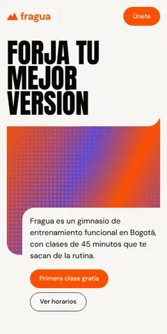
LlamativoLava
Naranja intenso, trama de puntos, letras condensadas gigantes y tarjetas muy redondeadas. Para gimnasios, deportes y marcas con energía.
Ejemplo: Fragua, gimnasio funcional -
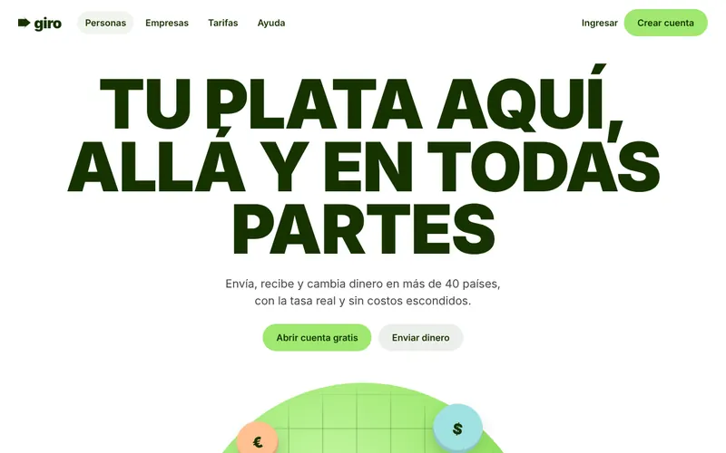
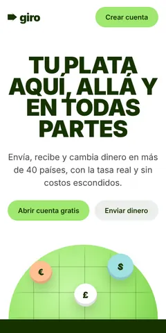
LlamativoVoltaje lima
Verde bosque y verde lima, titulares negros gigantes en mayúsculas y una calculadora a la vista. Para casas de cambio, pagos y fintech.
Ejemplo: Giro, envíos de dinero -
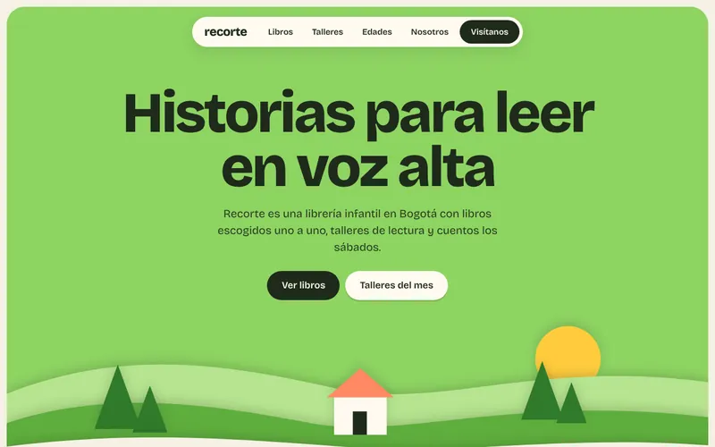
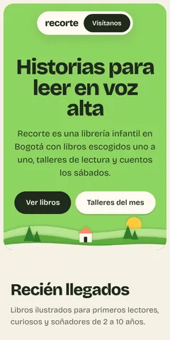
LlamativoCuento recortado
Verde suave, paisajes de papel recortado y un menú flotante en píldora. Para librerías, colegios, marcas infantiles y talleres.
Ejemplo: Recorte, librería infantil -
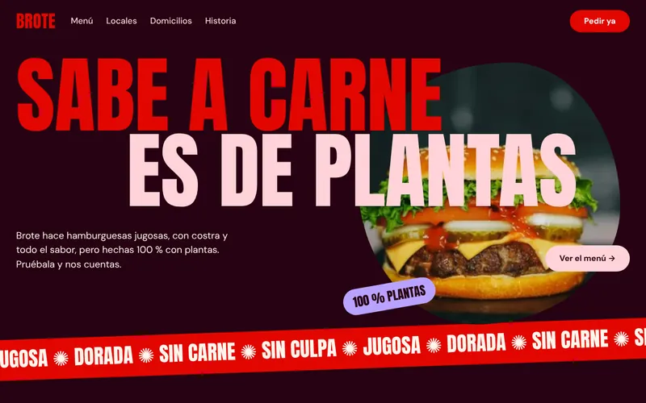
LlamativoVino punk
Vino tinto, rojo intenso, letras condensadas gigantes y fotos en formas orgánicas. Para hamburgueserías, comida rápida y marcas atrevidas.
Ejemplo: Brote, hamburguesas de plantas -
Llamativo
Mercado verde
Crema, verde bosque y lima resaltador, con platos vistos desde arriba. Para restaurantes saludables, mercados y domicilios.
Ejemplo: Huerta, bowls frescos -
Llamativo
Brasserie limón
Amarillo limón, negro oliva y letras anchas con mucho espacio entre ellas. Para restaurantes, cafés y bares.
Ejemplo: Limonero, poke bar -
Llamativo
Retiro soleado
Crema, un sol sonriente, franja amarilla y botones azules. Para bienestar, meditación, escuelas y salud.
Ejemplo: Pausa, app de meditación -
Llamativo
Caricatura
Violeta, letras amarillas gigantes con contorno y un personaje asomándose. Para papelerías, jugueterías y marcas divertidas.
Ejemplo: Papelito, papelería creativa -
Llamativo
Patio verde
Blanco, verde vivo, botones gruesos que parecen stickers y una mascota con amigos alrededor. Para academias, colegios y apps para aprender.
Ejemplo: Hablemos, academia de inglés -
Llamativo
Grafiti cúrcuma
Fondo óxido, letras doradas gigantes como un cartel de mercado y el producto al centro. Para salsas, comida, bebidas y marcas con sazón.
Ejemplo: Brasa Dorada, salsas picantes -
Llamativo
Alto voltaje
Negro y amarillo de advertencia en bloques completos, con letra fina y cifras grandes. Para energía, industria, ingeniería y tecnología.
Ejemplo: Voltio, energía para empresas -
Llamativo
Diorama
Cielo amarillo, un planeta azul con casitas alrededor y nubes de caricatura. Para estudios de animación, ilustradores y marcas alegres.
Ejemplo: Vuelta, estudio de animación -

 Editorial y lujo
Editorial y lujoCrema editorial
Papel crema, letras finas y botones negros. Tranquilo y elegante. Para restaurantes de autor, estudios y marcas de diseño.
Ejemplo: Fogón de Autor, restaurante -

 Editorial y lujo
Editorial y lujoGalería nocturna
Fondo oscuro, letras con serifa muy finas y paneles de color. Para joyerías, moda, hoteles y finanzas.
Ejemplo: Aurum, joyería de autor -

 Editorial y lujo
Editorial y lujoHora dorada
Foto cinematográfica al atardecer, tarjetas de vidrio y tonos vino y lila. Para coaching, bienestar y servicios personales.
Ejemplo: Rumbo, coaching ejecutivo -

 Editorial y lujo
Editorial y lujoTinta y papel
Crema de revista, letras livianas, fotos pequeñas y un azul intenso. Para servicio al cliente, medios y consultoras.
Ejemplo: Lumen, atención al cliente -

 Editorial y lujo
Editorial y lujoPergamino
Pergamino cálido, serifa clásica para los textos y la app sobre una pintura de paisaje. Para abogados, editoriales y software.
Ejemplo: Pluma, asistente para abogados -
Editorial y lujo
Iridiscente
Una portada de colores líquidos, blanco y negro radical y botones en píldora. Para agencias creativas, estudios y portafolios.
Ejemplo: Bruma, estudio creativo -
Editorial y lujo
Galería clásica
Fondo masilla, serifa monumental, pinturas al óleo y viñetas circulares. Para galerías, subastas, hoteles y marcas con historia.
Ejemplo: Casa Ocre, galería de arte -
Editorial y lujo
Invernadero
Crema, verde bosque, serifa liviana y paneles salvia, lima y pizarra. Para salud, bienestar, fisioterapia y nutrición.
Ejemplo: Raíz Salud, fisioterapia -
Editorial y lujo
Candelabro
Pergamino, azafrán, serifa fina gigante y una foto en arco. Para restaurantes, hoteles y lugares con historia.
Ejemplo: Casa Azafrán, restaurante -
Editorial y lujo
Periódico crema
Crema claro, serifa clásica enorme, botón lavanda y salas oscuras redondeadas. Para apps, herramientas y marcas con voz propia.
Ejemplo: Dicta, notas por voz -
Editorial y lujo
Magenta
Crema, magenta, un nombre gigante en letra condensada, verde bosque y botones circulares. Para agencias, estudios y marcas con carácter.
Ejemplo: Rayo, agencia de comunicación -
Editorial y lujo
Carretera retro
Crema, azul eléctrico, letras pesadas con serifa fina y un carro dibujado a mano. Para eventos, festivales e invitaciones.
Ejemplo: Ruta 90, encuentro de verano -
Editorial y lujo
Cartel gigante
Fondo hueso, un nombre gigante de borde a borde, foto a pantalla completa y tarjetas de colores. Para productoras, fotógrafos y estudios creativos.
Ejemplo: Gigante, productora audiovisual